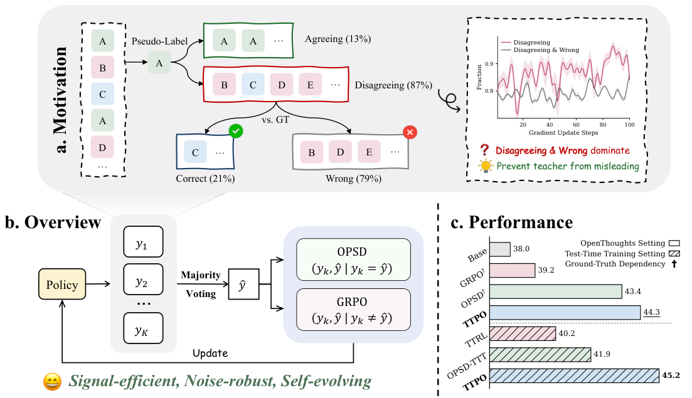
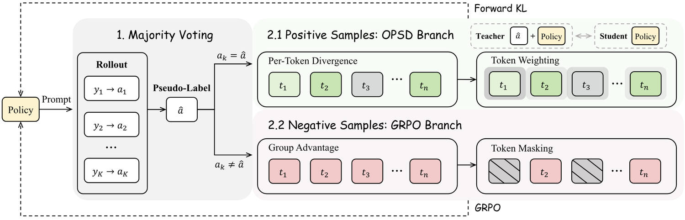
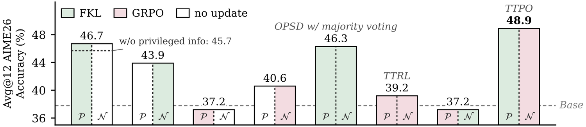
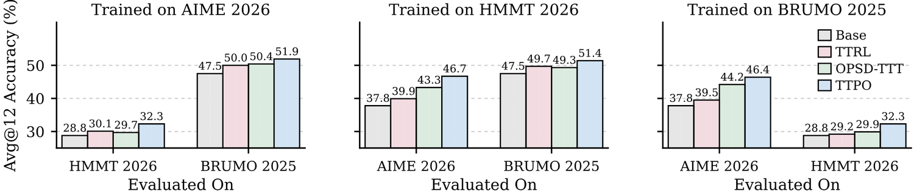
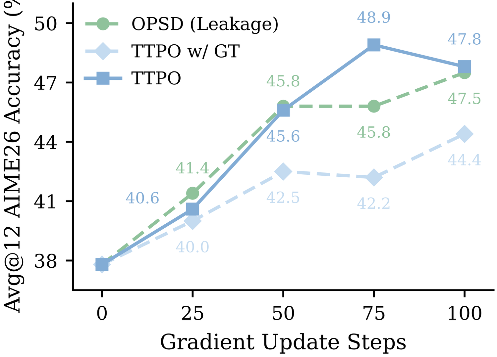
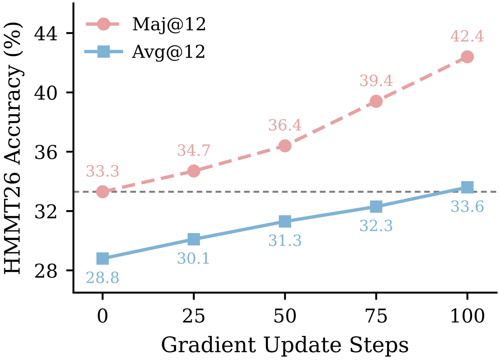

RLVR靠结果奖励给推理模型定标，OPSD再用答案当特权信息给每个token配监督。可到了测试时训练(TTT)，标签永远不来，这两样都断了：实验发现难题上多数投票的伪标签85% 是错的，直接拿它蒸馏会把错误灌进每一步。
这篇文章的解法是把每个信号用在它可靠的位置：同意伪标签的轮次做答案条件自蒸馏，反对伪标签的轮次用GRPO罚掉，全都不用标签。作者在三个规模的Qwen3上验证：无监督配方能追上乃至超过监督式基线，TTT里把1.7B从38.0% 带到45.2%。
推理模型靠扩展思维链在数学上突飞猛进，主引擎是验证奖励的强化学习(RLVR)。但这类结果奖励天然粗糙：它把一条路径级标量均匀广播到每个token上，让推演每一步其实无人监督。
一条互补的路线补上稠密、token级的监督：在策略自蒸馏(OPSD)把同样的策略用正确答案做条件，构成一个教师，逐token重打分学生自己的采样。近期工作越来越多把这两路信号揉在一起，要么加辅助蒸馏损失、要么做信用分配、要么在两者间路由。
麻烦在于这些方法全都假设有标准答案：奖励拿它做验证，教师拿它做特权上下文。可测试时训练(TTT)让模型在它正要解决的那些题上自我提升，标签永远不来，上述方法一条都不成立。
没标签，监督只能来自模型自己：每题采一组采样，把多数答案当伪标签。作者实测在竞赛级难题上，伪标签平均85% 是错的；但要害在其中的非对称结构：即使伪标签错，79% 的反对采样其实也错。于是罚掉反对它的轮次，十有八九仍是正确抉择：因为它只依赖分歧本身，从不依赖伪标签写的是哪个答案。相反，把采样蒸馏向伪标签就没有这层韧性：一个错误答案进了教师，就会污染其后每一个token。

基于这种非对称性，作者提出测试时策略优化(TTPO)：GRPO只罚那些与伪标签不一致的轮次，OPSD蒸馏只作用于一致的轮次。分歧罚不依赖伪标签的答案内容，因此错标签也基本罚对；蒸馏分支则因为教师用学生自己产出的那个答案做条件，即使答案错了，更新也退化成把模型的思考模式蒸馏进非思考模式，而不是奔向某个任意的错。
实现上，模型把每个问题采出若干条轨迹、抽答案，按数学等价性聚簇，把最大聚簇当伪标签并记下共识数，再据此把轨迹切成与伪标签一致的正面样本、不一致的负面样本。教师则照样把同一模型用伪标签做特权条件，与学生只差prompt前缀。
对每个正面样本，TTPO施加OPSD的正向KL，并做逐token加权：用学生熵与师生散度两条互补信号各做逐样本min-max归一，再经一个软或(Soft-OR)合并：只要有一路说这token还有学习价值(学生没把握、或自信地错)，就给高权重；只有当学生既自信又和教师一致时权重才趋零。
对正面之外的负面样本，则施加GRPO：每轮按多数投票给一个二值奖励，落在整个问题的组内相对计算优势。由于GRPO只作用于负面，标准GRPO里正面优势梯度对错误罚的抵消作用没有了，于是需要主动减少误伤：论文称之为负面误罚问题。TO-Mask方案给每个token打分，用未归一的对数概率当主排序项、配合归一化确定度，天然把高概率、真正算对的局部token排出去，只去罚那些自信却异常的token，再取按分数前50% 做掩码。
最终目标把两路信号加权合并，完整流程见Algorithm 1。这幅总览把TTPO拧成一条线：多数投票分组、OPSD蒸馏一致者、GRPO罚不一致者。

为和只能靠真实标注的方法对比，作者先在OpenThoughts数据上训练：这里标注存在，但TTPO全程不用，仅作对照底色。实验在Qwen3-1.7B/4B/8B、五个竞赛基准(AIME25/26、HMMT25/26、BRUMO25)上量Avg@12。
TTPO在三个规模都胜过依赖标注的OPSD：平均40.1对39.7(1.7B)、58.6对58.4(4B)、62.6对61.7(8B)，全程没有拿到过真实标签。跨规模还有个亮点：Qwen3-4B上TTPO(58.6)追平了Qwen3-8B的基座(58.6)，等于一个小模型在训练配方催化下摸到了更大未训练模型的推理液面。
| 方法 | AIME25 | HMMT25 | AIME26 | HMMT26 | BRUMO25 | 平均 |
|---|---|---|---|---|---|---|
| Qwen3-1.7B Base | 36.9 | 21.9 | 37.8 | 28.8 | 47.5 | 34.6 |
| +GRPO（用标注） | 37.3 | 23.6 | 40.3 | 29.3 | 48.1 | 35.7 |
| +OPSD（用标注） | 40.3 | 28.1 | 46.4 | 31.4 | 52.5 | 39.7 |
| +TTPO（无标注） | 41.7 | 26.1 | 46.5 | 31.6 | 54.7 | 40.1 |
| Qwen3-4B Base | 66.1 | 41.9 | 65.8 | 42.4 | 64.0 | 56.0 |
| +GRPO（用标注） | 66.7 | 45.0 | 66.6 | 43.2 | 66.1 | 57.5 |
| +OPSD（用标注） | 68.3 | 44.2 | 68.1 | 44.4 | 67.2 | 58.4 |
| +TTPO（无标注） | 69.4 | 43.6 | 68.1 | 44.7 | 67.2 | 58.6 |
| Qwen3-8B Base | 66.7 | 44.2 | 67.5 | 45.5 | 69.2 | 58.6 |
| +GRPO（用标注） | 70.3 | 46.7 | 69.2 | 48.0 | 71.9 | 61.2 |
| +OPSD（用标注） | 70.8 | 46.4 | 72.5 | 47.2 | 71.4 | 61.7 |
| +TTPO（无标注） | 71.4 | 46.1 | 74.2 | 48.0 | 73.1 | 62.6 |
更关键的是完全没有标签的TTT：直接在测试题上训练，跟TTRL、OPSD-TTT两个无监督基线比。Qwen3-1.7B上TTPO做到45.2平均，比OPSD-TTT(41.9)高3.3、比TTRL(40.2)高5.0，较基座净增7.2个百分点(38.0→45.2)。
和TTRL的差距说明稠密分布引导的价值：TTRL只有二值奖励，TTPO额外用答案条件教师把正确轨迹里token级知识接过来。和OPSD-TTT的差距则说明非对称设计榨出了更多信号：OPSD-TTT用贪心解码的确定答案当代替伪标签，却只蒸馏正面；TTPO额外靠选择性RL罚把负面采样也用上。跨规模TTPO在4B(61.1)超越8B基座(60.7)，无标签TTT也能抹平模型尺寸差。
| 方法 | AIME26 | HMMT26 | BRUMO25 | 平均 |
|---|---|---|---|---|
| Qwen3-1.7B Base | 37.8 | 28.8 | 47.5 | 38.0 |
| +TTRL | 39.2 | 30.6 | 50.9 | 40.2 |
| +OPSD-TTT | 44.7 | 30.3 | 50.8 | 41.9 |
| +TTPO | 48.9 | 33.6 | 53.1 | 45.2 |
| Qwen3-4B Base | 65.8 | 42.4 | 64.0 | 57.4 |
| +TTRL | 66.4 | 43.2 | 66.7 | 58.8 |
| +OPSD-TTT | 67.8 | 43.4 | 66.9 | 59.4 |
| +TTPO | 70.8 | 45.7 | 66.9 | 61.1 |
| Qwen3-8B Base | 67.5 | 45.5 | 69.2 | 60.7 |
| +TTRL | 70.8 | 48.0 | 70.1 | 63.0 |
| +OPSD-TTT | 71.7 | 47.2 | 72.2 | 63.7 |
| +TTPO | 73.9 | 48.5 | 73.6 | 65.3 |
表3拆开两个token级机制各自的贡献。去掉正面加权(w/o pos. weight)，等于把已收敛、低价值的低熵低散度位置也一律蒸馏，稀释了真正有信息token的梯度；去掉负面掩码(w/o neg. mask)则不分青红皂白惩罚所有token，既误伤本可被正面优势对冲掉的局部正确推理步，又让低概率高熵的异常token统治梯度、注入噪声。完整配方在影响大的地方聚焦蒸馏、只在错误源头下手罚。
更新策略的组合(Figure 3)也印证分工：完整TTPO(正面FKL、负面GRPO，48.9)甩开所有替换。正面用它是因为答案匹配伪标签，即便标签错、教师也以学生自己产出的答案做条件，退化成思考转非思考蒸馏(45.7)依然安全；因此只蒸馏正面(46.7)优于全量蒸馏(46.3)或只蒸馏负面(43.9)。负面归GRPO则因硬TTT上多数负面被正确识别，无标签的罚比被污染蒸馏更安全；反过来若正面用GRPO(37.2)、或将两路对调(pos=GRPO,neg=FKL 37.2)都最差：既要脆弱的加强又要污染的蒸馏。

先看跨基准泛化(Figure 4)：在任意单一基准上训练，模型在另外两个上也稳定提升，说明TTPO强化的是基础推理能力而非记忆题目模式。

再把伪标签换成真实答案测上限(Figure 5)：有意思的是带伪标签的TTPO反而胜过带真实标注的TTPO和OPSD。两个原因：其一，难题上完美答案并不总能被复现，导致正面样本稀少乃至为零，把FKL分支饿死、GRPO优势趋近零；而多数投票标签更容易被命中，维持健康的正负样本比，让两路都活跃。其二，AIME答案是最短数字，几乎撼不动思考型教师，而OpenThoughts轨迹承载的信息更丰富。熵图也佐证：伪标签配方维持更高熵，多数投票加蒸馏共同促进探索，最终盖过了完美标签的理论优势。

最后看可持续性(Figure 6)：既然训练信号来自多数投票，基座Maj@12就设着伪标签质量的初始天花板。训练中Avg@12稳步爬到基座Maj@12，说明多数投票里凝聚的集体知识被蒸馏成单样本表现；更重要的是Maj@12同步抬升不是滞胀：模型越强、采样越准、伪标签越对，抬高了后续训练的天花板。这轮自我进化让TTPO走得比当下模型能力之上的真实标注训练还远。

参考：https://arxiv.org/abs/2608.27448